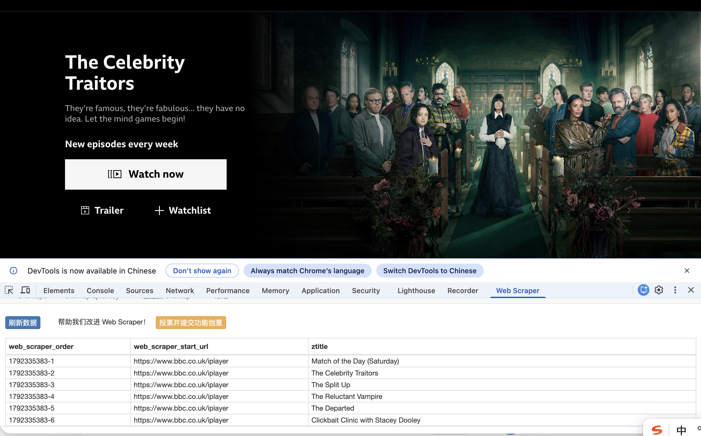

02 / REFLECTION
Weekly reflections.
A record of my learning, ideas and reflections throughout my Digital Media studies.
Contents
Open weekly directory
Week 2
WEEK 02 / REFLECTION
Week02 First workshop
It is interesting to create a piece of work and manage the operation logic. Actually, the course is a little bit similar to DW, which I learned during my postgraduate studies and that made my workshop easier to understand. However, I still made a funny mistake during the workshop which was that I forgot to press Save in VS Code. Well, at lease I will never do that again.
The world changes so fast. AI even could not write code when I was learning DW, and it could do that at lease one year ago cause I used AI to build up a questionnaire test during my internship. But I still need to amend some details because AI’s code could not run at all. So learning the rules of webpage making is still essential nowadays, because people should have the ability to type code just based on our brain and hand. At lease I should learn the establish logic even if I cannot do it.
↑ Back to contentsWeek 3
WEEK 03 / REFLECTION
Week03 Web Scraping.
This week's task was a bit more complex than last week's. Web scraping was entirely new to me, so understanding the logical process was challenging. However, after completing the entire process, the principles of web scraping became much clearer.

↑ Back to contents